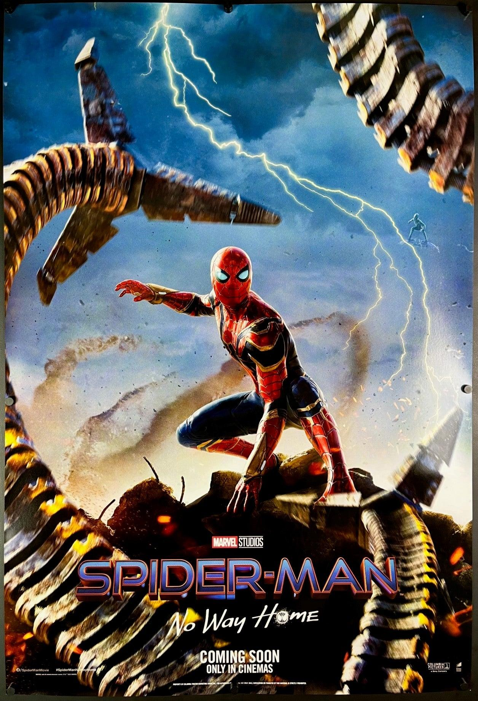

Сол: 2021
Жанр: Фантастика, Боевик, Саёҳат
Коргардон:Jon Watts
Питер Паркер пас аз ошкор шудани шахсияташ бо мушкилоти нав рӯ ба рӯ мешавад. Ӯ барои барқарор кардани зиндагии худ ба ҷаҳони бисёрҷаҳонӣ ворид мешавад.